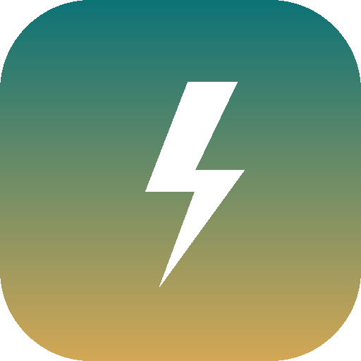

Web · Android · Product building
Useful products.
Clear interfaces.
Built to ship.
I’m Asser, a web and Android developer based in Sousse, Tunisia. Since August 2025, I’ve built independent products using responsive JavaScript interfaces, Python/Flask web applications, AI/API integrations, and Cloudflare deployment. My portfolio presents personal projects, not paid client engagements.
Web & Android App Developer | JavaScript, Python/Flask & AI/API Integrations | Open to Well-Scoped Remote Freelance & Part-Time Work
⌖ Sousse, Tunisia Open to paid remote freelance and part-time work
INDEPENDENT PROJECTS01 — 03
From first
interface to
live product.
DESIGNINTEGRATEDEPLOY
JavaScript
Python / Flask
AI + APIs
Android
A practical builder’s perspective
Good software connects the interface, the integration, and the next step a person needs to take.
Selected work
Three projects.
Three product questions.
Personal projects built to explore useful web, mobile, and AI-enabled experiences. They are not client engagements or salaried roles.
01 / MULTIMODAL WEB APPPERSONAL PROJECT

Ask · Analyze · Create
PYTHON / FLASKCLOUDFLARE
01Personal project
Nafti AI
A multimodal assistant, designed as one product experience.
A Flask web app combining assisted chat, multi-image analysis, image generation, browser speech input, audio playback, and saved conversation sessions. The product also includes account creation and login, optional Google OAuth, activity profiles, settings, gallery interactions, shareable conversation links, and TXT/Markdown/JSON export. Provider availability and quotas can affect AI features.
- Python · Flask · Jinja
- Groq · Hugging Face
- Transformers · Diffusers
- Web Speech API · gTTS
- Pillow · CORS · WSGI
- Workers · D1 · Workers AI
02 / WEB + ANDROIDPERSONAL PROJECT
CLASHAI
L’IA t’clashi b derja
CAPACITOR · GRADLEDERJA · SHAREABLE
02Personal project
Clash AI
A local-language idea, built for web and Android.
Users submit a photo and receive a playful verdict in Tunisian Derja, with style, pose, expression, and atmosphere considered in the flow. The experience prepares vocalized Arabic text while preserving natural French or English words, then can produce a shareable card or short video. Gemini runs through a Cloudflare Worker, with browser CLIP fallback, optional OpenAI input, Android sharing, voice and billing hooks, quotas, origin checks, and model allowlists. VoxCPM voice generation remains an optional pilot, not a guaranteed production feature.
- JavaScript · Node tests
- Capacitor 6 · Android · Java
- Gemini · Workers AI
- Transformers.js · CLIP
- KV quotas · rate limits
- PWA · Android share
- Gradle · Play Billing hooks
03 / RESPONSIVE STOREFRONTPERSONAL PROJECT
FASHIONinMOTION
Luxe & Élégance
RESPONSIVE STOREFRONT
HTML · CSS · JAVASCRIPTGITHUB PAGES
03Personal project
Fashion In Motion
A storefront experience from discovery to order.
A responsive fashion storefront with catalog browsing, collection filters, wishlist interactions, an interactive cart with quantity controls and totals, checkout and delivery details, a payment modal with tabs and order summary, and a D17 transfer flow. Order notifications use FormSubmit. D17 transfer verification is manual by the merchant; the site does not integrate directly with a banking API.
- HTML · CSS · JavaScript
- Responsive UI
- Filters · Wishlist · Cart
- Checkout · Form validation
- Payment UI · D17 flow
- FormSubmit notifications
- Google Fonts · Font Awesome
Live demonstrations
Try the work,
not just the description.
The three public demos were checked before this update. Each link opens the live experience in a new tab; provider quotas and hosted-service availability may affect AI interactions.
How I build
Make the feature
work for the person.
I focus on the connection between interface behavior, useful integrations, and a product flow people can understand.
01
Start with the user flow
Make the next action clear across screen sizes, from browsing and filtering to submitting an input, sharing an output, or placing an order.
Integrate with clear boundaries
Connect APIs and AI services while communicating provider limits, manual steps, consent rules, fallbacks, and experimental features accurately.
Build, test, deploy, learn
Bring a practical web or mobile feature into a working deployment, add testable boundaries where useful, then use the result to guide the next iteration.